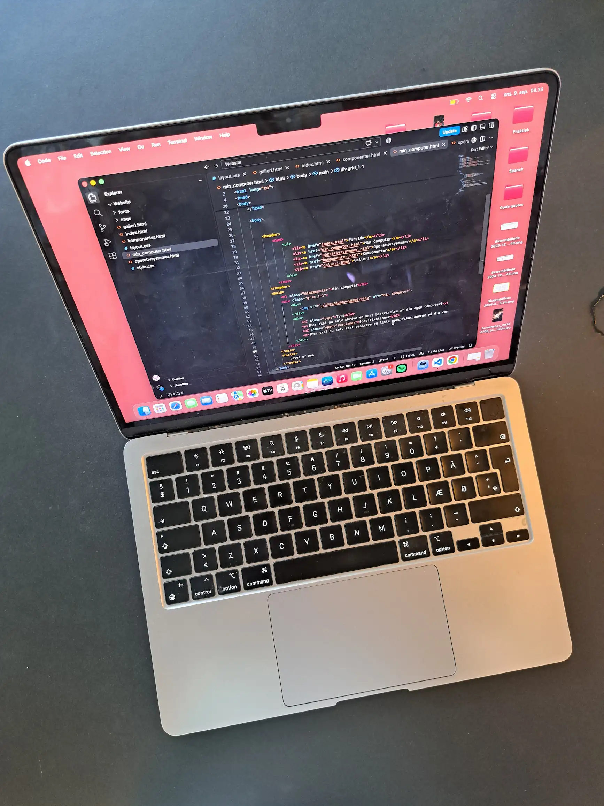

Min computer

Type
Min computer er en Maccomputer jeg købte for omkring 2 år siden brugt på DBA. Jeg købte den her fordi jeg skulle redigere en video som var optaget med et Black Magic kamera og jeg ville gerne lære at redigere i Davinci Resolve.
Specifikationer
- Skærmopløsning på computeren: 2560x1664
- Skærmopløsning i browser: 1470x1112.36
- Model: Macbookair, M2, 2022
- 16GB ram